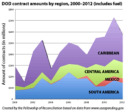

Dear Friends,
The Fellowship of Reconciliation offers these updates from Latin America and the Caribbean.
By Emily Schmitz
 Negotiations between the Colombian government and FARC guerrillas re-opened today, after a week-long recess. The government of Juan Manuel Santos refused to halt fire alongside guerrilla troops, thus ending the FARC's cease-fire on January 19 at midnight. Reducing the land issue to its basic elements, the FARC presented ten points it considers crucial to land reform and essential to the process of creating lasting peace. Beneath the semantics of these points lies a shadow of possibility that FARC and government dialogues are today becoming closer to agreement than ever. But details have yet to be worked out, and before then, "nothing will be approved until everything has been negotiated." Read more. Negotiations between the Colombian government and FARC guerrillas re-opened today, after a week-long recess. The government of Juan Manuel Santos refused to halt fire alongside guerrilla troops, thus ending the FARC's cease-fire on January 19 at midnight. Reducing the land issue to its basic elements, the FARC presented ten points it considers crucial to land reform and essential to the process of creating lasting peace. Beneath the semantics of these points lies a shadow of possibility that FARC and government dialogues are today becoming closer to agreement than ever. But details have yet to be worked out, and before then, "nothing will be approved until everything has been negotiated." Read more.
 Get moving on this March 6 for truth, and participate in the Colombia Victims Movement's (MOVICE) campaign, "Memory is written on your skin." Check out our Flickr page. You still have time to participate! The photo that you send us will be incorporated into the images for the March 6 mobilization. Since 2008, MOVICE (Colombian Victims Movement Against State Crimes) proclaimed March 6 as the day of dignity for victims of state crimes in Colombia. On this date, we have facilitated a national and international mobilization as a way to reject crimes perpetrated by the State, to make visible high levels of impunity, to show the mechanisms used to hide the truth and to expose the continuation of paramilitarism, the continual denial of our demands and the persistent stigmatization, persecution, disappearance and assassinations against victims and other social leaders. Get moving on this March 6 for truth, and participate in the Colombia Victims Movement's (MOVICE) campaign, "Memory is written on your skin." Check out our Flickr page. You still have time to participate! The photo that you send us will be incorporated into the images for the March 6 mobilization. Since 2008, MOVICE (Colombian Victims Movement Against State Crimes) proclaimed March 6 as the day of dignity for victims of state crimes in Colombia. On this date, we have facilitated a national and international mobilization as a way to reject crimes perpetrated by the State, to make visible high levels of impunity, to show the mechanisms used to hide the truth and to expose the continuation of paramilitarism, the continual denial of our demands and the persistent stigmatization, persecution, disappearance and assassinations against victims and other social leaders.
Send your photo here.
Watch the promotional video.
Follow the campaign here.
More info at MOVICE's site.
By John Lindsay-Poland
The Pentagon signed $444 million in non-fuel contracts for purchases and services in Latin America and the Caribbean during the 2012 fiscal year, an overall decrease of nearly 15% from the previous year. But US military spending in the region is still considerably higher than during the George W. Bush administration. Many countries that host US military activities hope to receive economic benefits and jobs as a result. But more five of every six Pentagon dollars contracted for services and goods in the region went to US-based companies. In Guatemala, where there is a ban on most State Department-channeled military aid to the army, Defense Department contracts have more than doubled since 2010. Read more.
Statement of Bi-national Gathering of Movement for Peace with Justice and Dignity
Mexico is suffering the consequences of the unrestricted sale of military-style weapons in the United States. More than 100,000 Mexicans, among them 1,800 children less than 15 years old, have been killed in the failed war on drugs in Mexico since 2006. The great majority were victims of firearms, and 68% of firearms recovered at crime scenes in Mexico and traced between 2007 and 2011 were sold in the United States. We urge people of both Mexico and the United States to support these changes that are so urgent for preventing more atrocities with firearms. Read more.
By Alejandro González
 The might of the Colombian Army and its allies is felt not only in the field but also in the legislature. On December 11, the Colombian Senate approved a constitutional reform that expands significantly the scope of the military criminal jurisdiction. Military courts will decide which court has jurisdiction, and will try many international law crimes. The reform also applies retroactively, so that cases now being tried under the ordinary criminal justice system may be transferred to military courts. With the expansion of the military courts' jurisdiction, the message to Army officials seems to be: Continue committing human rights violations; impunity is now guaranteed. Read more. The might of the Colombian Army and its allies is felt not only in the field but also in the legislature. On December 11, the Colombian Senate approved a constitutional reform that expands significantly the scope of the military criminal jurisdiction. Military courts will decide which court has jurisdiction, and will try many international law crimes. The reform also applies retroactively, so that cases now being tried under the ordinary criminal justice system may be transferred to military courts. With the expansion of the military courts' jurisdiction, the message to Army officials seems to be: Continue committing human rights violations; impunity is now guaranteed. Read more. |